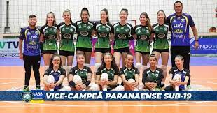
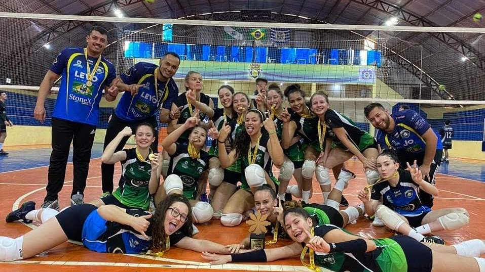

CAMPEONATOS
Nós jogamos muitos campeonatos durante o ano inteiro, como paranaense (é um campeonato com série A e B, onde na série A jogam os melhores do Paraná, tem várias categorias, sub14, 15, 16, 17, 19, e o adulto), JOJUPs (Jogos da Juventude do Paraná, tem três etapas: Regional, Macro Regional, e a final, nesse camopenato só pode jogar até 17 anos com duas de 18 anos), JEPs (Jogos Ecolares do paraná, tem quatro etapas, Municipal, Regional, Macro Regional, e a Final, nesse campeonato só pode jogar quem está no ensino médio etem 17 anos).
Esse é o campeonato mais importante do ano, onde nós temos mais visibilidade, principalmente no adulto.
Pelo paranaense adulto, Cascavel joga série A, e está em 5° lugar na tabela de classificação.
O sub-19 joga na série B, nossas meninas foram em busca de uma vaga para a divisão A, ficando em segundo lugar, perdendo apenas para Chopinzinho e Guarapuava.

O sub-16 jogou esse ano também na série B, e ficou em 5° lugar, jogando com equipes fortes como, São José dos Pinhais, Chopinzinho.
e o sub-14 ficou em 6° lugar na série B também, jogando como equipes de Guarapuava, São José, Chopinzinho, e ganhou da forte equipe de Foz do Iguaçú.
JUVENTUDE
O juventude jogou ano passado e ficou em segundo lugar, e esse ano na fase regional ficou em 1° lugar, e na fase macro regional ficou em 3° lugar.

ESCOLARES
Os escolares, são separados em 4 estapas, Municipal, Regional, macro